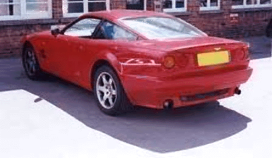
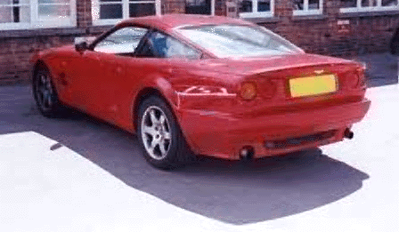

Aston Martin V8 Vantage

 

Specs(V8 Vantage/600)
Price |
$275,283 / N/A |
Top Speed |
186mph(officially) record 191mph/ N/A |
Acceleration |
|
Engine |
|
0-30mph |
2.1sec / N/A |
Type |
Twin Supercharged V8 , 32valve Quad cam / same |
0-60mph |
4.6sec / 4.3sec? |
Displacement |
5.3L(5340cc) / same |
0-100 |
11.3(est.) / N/A |
Power |
550hp@6500rpm / 600hp@? |
1/4 mile |
13.2sec/?mhp / N/A |
Torque |
551 lbs-ft@4000rpm / 600lbs-ft@? (!!) |
Weight |
4,020 lbs / slightly heavier |
Handling |
|
Gas mileage |
14.5mpg |
Skidpad |
N/A |
City |
N/A |
600ft slalom |
N/A |
Highway |
N/A |
Powertrain |
Front engined, rear wheel drive, 6 speed manual / same |
(? = incomplete data or unverified info, N/A = info Not Available)
Beyond the specs:
Fully equipped with all the luxury expected of an Aston Martin, this fairly heavy car (2 tons is by no means light!) has amazing acceleration. For those who want to go very fast but still want luxury worthy of a king then this is the car for you, that's if of course if you can afford it. Simply put, this 550hp beast can in the right hands embarrass almost any musclecar driver who dares to test it, all while allowing its occupants to enjoy the leathery lap of luxury. Just remember that having good tire grip, a 2-ton vehicle with 551 lbs-ft of torque is not quite the easiest combination to handle.
~Oracle